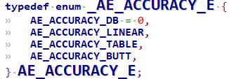

8. Complete the AE Configuration Function¶
SensorDriverFunctionthe corresponding contentoperation callbacksthe corresponding content。
the corresponding contentsectionthe corresponding contentusethe corresponding contentSensor datasheetthe corresponding contentDescriptionAE Callbacksthe corresponding contentBasicFunction。
8.1. Development Flow¶
the corresponding contentAEBasicFunctioncallbacks
pfn_cmos_get_ae_default
pfn_cmos_fps_set
pfn_cmos_inttime_update
pfn_cmos_gains_update
pfn_cmos_again_calc_table
pfn_cmos_dgain_calc_table
pfn_cmos_get_inttime_max
8.2. Precautions¶
pfn_cmos_get_ae_default： the corresponding contentAEthe corresponding contentRelatedthe corresponding contentsensorData。
needthe corresponding content AE the corresponding content linear modethe corresponding contentExposurethe corresponding content，linear/ WDRmodethe corresponding content/the corresponding contentGainthe corresponding contentMinimum ValueandGainthe corresponding contentType， the corresponding contentGainthe corresponding contentYesthe corresponding content : 0db , 6db, 12db the corresponding contentselect，the corresponding content DB the corresponding content， the corresponding contentlinear，Exposurethe corresponding content frame the corresponding content，the corresponding content frame the corresponding content frame the corresponding content。
u32FullLinesStd : the corresponding content, the corresponding contentFramethe corresponding contentTimethe corresponding contentlinethe corresponding content.
u32MaxAgain: the corresponding contentAGain the corresponding content.
u32MinAgain: the corresponding contentAGain the corresponding content.
u32MaxDgain: the corresponding contentDGain the corresponding content.
u32MinDgain: the corresponding contentDGain the corresponding content.
u32MaxIntTime: linearmodethe corresponding contentExposurethe corresponding content.
u32MinIntTimeTarget: linearmodethe corresponding contentExposurethe corresponding content.
u32AEResponseFrame: AEthe corresponding contentTime(unit: frame)
mainlyYesthe corresponding contentsensor specthe corresponding contentRelatedAEthe corresponding content，IncludesFullLinesStd,FullLinesMax, IntTimethe corresponding contentmax、minandstep, gainthe corresponding contentmaxthe corresponding contentminandstepthe corresponding content。Notethe corresponding contentverifythe corresponding contentintTimethe corresponding contentgainthe corresponding contentAccuType:
{kind=link}

the corresponding contentintTimethe corresponding contentregisterYesthe corresponding contentlinearthe corresponding content, AccuTypeConfigurationthe corresponding contentAE_ACCURACY_LINEAR;
gainthe corresponding contentAE_ACCURACY_TABLE,Tablethe corresponding contentgain tablethe corresponding content， the corresponding contentIntroductionpfn_cmos_again_calc_table/pfn_cmos_dgain_calc_table。
the corresponding contentsensorthe corresponding contentgainthe corresponding content，the corresponding contentsoi_F35the corresponding content,the corresponding contentdgainthe corresponding contentadjustment，the corresponding content1x, 2x, 3x, 4xthe corresponding content4the corresponding content。

pfn_cmos_fps_set： the corresponding contentsensorFramethe corresponding content。
defaultthe corresponding contentSensorOutputmodethe corresponding contentFramethe corresponding content。SensorDriverincreaseOutputthe corresponding contentBlankingthe corresponding contentFramethe corresponding contenteffect。
Notethe corresponding contentOutputthe corresponding content，the corresponding contentSensorthe corresponding contentExposurerangethe corresponding content，SensorDriverthe corresponding content。
For example, the corresponding contentFPS=30, the corresponding contentFPS the corresponding content30.the corresponding contentadjustframe ratethe corresponding contentmethodYesthe corresponding contentincreasesensorOutputthe corresponding contentfull lines.
For example, the corresponding contentFPS=30the corresponding content, full lines = 1125. FPS=25the corresponding contentfull lines = 1125*30/25 = 1350。
pfn_cmos_inttime_update： the corresponding contentSensorthe corresponding contentExposureTimethe corresponding contentExposurethe corresponding content AE。
InputParameterthe corresponding content，the corresponding contentWDRmodethe corresponding contentTablethe corresponding contentFramethe corresponding contentFramethe corresponding contentExposurethe corresponding content，Unitthe corresponding contentOutputthe corresponding content。
For example，the corresponding contentu32IntTime[0]=8，u32IntTime[[1]=1000，the corresponding contentTablethe corresponding contentFrameExposurethe corresponding content8the corresponding contentTime，the corresponding contentFramethe corresponding content1000the corresponding contentTime。
the corresponding contentlinearmode，the corresponding content[0]the corresponding contentTableExposurethe corresponding content，the corresponding content[1]Nonethe corresponding content。Notethe corresponding contentWDRmode， adjustSensorthe corresponding contentFrameExposurethe corresponding contentneedthe corresponding contentCropinformationthe corresponding contentmipi-rxthe corresponding content。
pfn_cmos_gains_update： the corresponding contentSensorthe corresponding contentGainthe corresponding content。
InputParameterthe corresponding contentpu32Againthe corresponding contentpu32Dgainthe corresponding content。
the corresponding contentWDRmode，pu32Again[0]the corresponding contentTablethe corresponding contentFramethe corresponding contentGainthe corresponding content，pu32Again[[1]the corresponding contentTablethe corresponding contentFramethe corresponding contentGainthe corresponding content；
pu32Dgain[0]the corresponding contentTablethe corresponding contentFramethe corresponding contentGainthe corresponding content，pu32Dgain[[1]the corresponding contentTablethe corresponding contentFramethe corresponding contentGainthe corresponding content。
valuethe corresponding contentSensorthe corresponding content，the corresponding contentpfn_cmos_again_calc_tablethe corresponding contentpfn_cmos_dgain_calc_tablethe corresponding contentGainthe corresponding content。
the corresponding contentlinearmode，the corresponding contentpu32Again[0]the corresponding contentpu32Dgain[0]the corresponding content。
the corresponding contentpfn_cmos_again_calc_tablethe corresponding contentpfn_cmos_dgain_calc_tablethe corresponding contentGainthe corresponding content。
the corresponding contentlinearmode，the corresponding contentpu32Again[0]the corresponding contentpu32Dgain[0]the corresponding content。
the corresponding contentWDR modethe corresponding content：
pu32Again[0]: the corresponding contentFramethe corresponding contentAgainConfiguration.
pu32Again[1]: the corresponding contentFramethe corresponding contentAgainConfiguration.
pu32Dgain[0]: the corresponding contentFramethe corresponding contentDgainConfiguration.
pu32Dgain[1]: the corresponding contentFramethe corresponding contentDgainConfiguration.
Gains updatethe corresponding content3the corresponding contentmode： SHARE, WDR_2F, ONLY_LEF, Setthe corresponding contentpfnSetInit.
SHARE: the corresponding contentFramethe corresponding contentGainConfiguration (Sony, OV).
WDR_2F: the corresponding contentFramethe corresponding contentGainConfiguration (Sony, OV).
ONLY_LEF: the corresponding contentFrameGainthe corresponding contentConfiguration (SOI).
pfn_cmos_again_calc_table： Inputthe corresponding content1024the corresponding contentGainthe corresponding content，SensorDriverthe corresponding contentTablethe corresponding contentInputthe corresponding contentGainthe corresponding content，Outputthe corresponding contentSensorthe corresponding content。
pu32AgainLin: AEthe corresponding content1024-basedthe corresponding contentAgain.
SensorDriverthe corresponding contentgain tablethe corresponding content, the corresponding content1024-based Again.
Againthe corresponding contentrangethe corresponding contentpfn_cmos_get_ae_default
pu32AgainDb: the corresponding contentSensor Again register Configuration.
pfn_cmos_dgain_calc_table： Inputthe corresponding content1024the corresponding contentGainthe corresponding content，SensorDriverthe corresponding contentTablethe corresponding contentInputthe corresponding contentGainthe corresponding content，Outputthe corresponding contentSensorthe corresponding content。
pu32DgainLin: AEthe corresponding content1024-basedthe corresponding contentDgain.
SensorDriverthe corresponding contentgain tablethe corresponding content, the corresponding content1024-based Dgain.
Dgainthe corresponding contentrangethe corresponding contentpfn_cmos_get_ae_default
pu32DgainDb: the corresponding contentSensor Dgain register Configuration.
the corresponding contentsensor Dgainadjustthe corresponding content(1X, 2X, 4X…),
pfn_cmos_get_ae_default the corresponding contentstDgainAccu.enAccuTypethe corresponding contentAE_ACCURACY_DB.
pfn_cmos_get_inttime_max： the corresponding contentWDRmode，the corresponding contentcurrentthe corresponding contentExposurethe corresponding contentFramethe corresponding contentExposurethe corresponding contentrange。
SONY DOL, F35 HDR-wo VC, OV HDR-DT, Smartsens SC200AI the corresponding contentYesthe corresponding contentblankingthe corresponding contentFrameExposure。
the corresponding contentsensor (OS08A20, F35) the corresponding contentFix L2S distance, the corresponding contentFrameExposurethe corresponding content, the corresponding contentadjustthe corresponding contentFrameExposurethe corresponding content, L2S distance the corresponding content, ISP crop size the corresponding contentConfiguration.
u16ManRatioEnable: Manual Ratio Enable, the corresponding content1
au32Ratio[0] : 2 frame HDRthe corresponding content, the corresponding contentFrameExposure*64/the corresponding contentFrameExposurethe corresponding content
au32IntTimeMax[0] : the corresponding contentFramethe corresponding contentExposurethe corresponding content(Unit:the corresponding contentHTime)
au32IntTimeMax[1] : the corresponding contentFramethe corresponding contentExposurethe corresponding content(Unit:the corresponding contentHTime)
au32IntTimeMin[0] : the corresponding contentFramethe corresponding contentExposurethe corresponding content(Unit:the corresponding contentHTime)
au32IntTimeMin[1] : the corresponding contentFramethe corresponding contentExposurethe corresponding content(Unit:the corresponding contentHTime)
pu32LFMaxIntTime[0] : NA